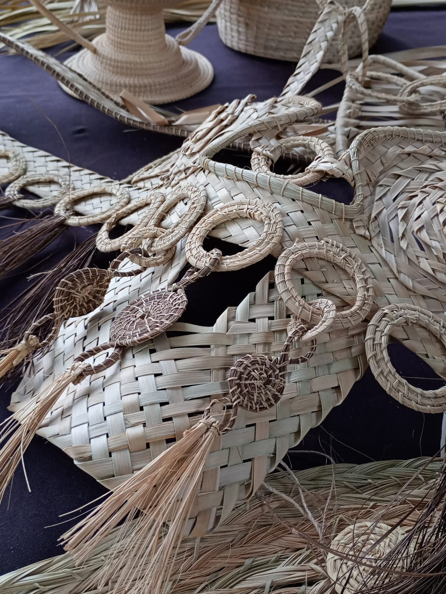
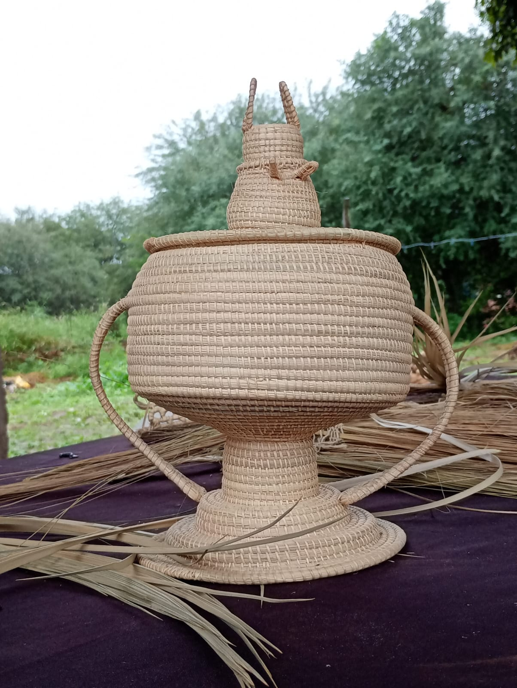
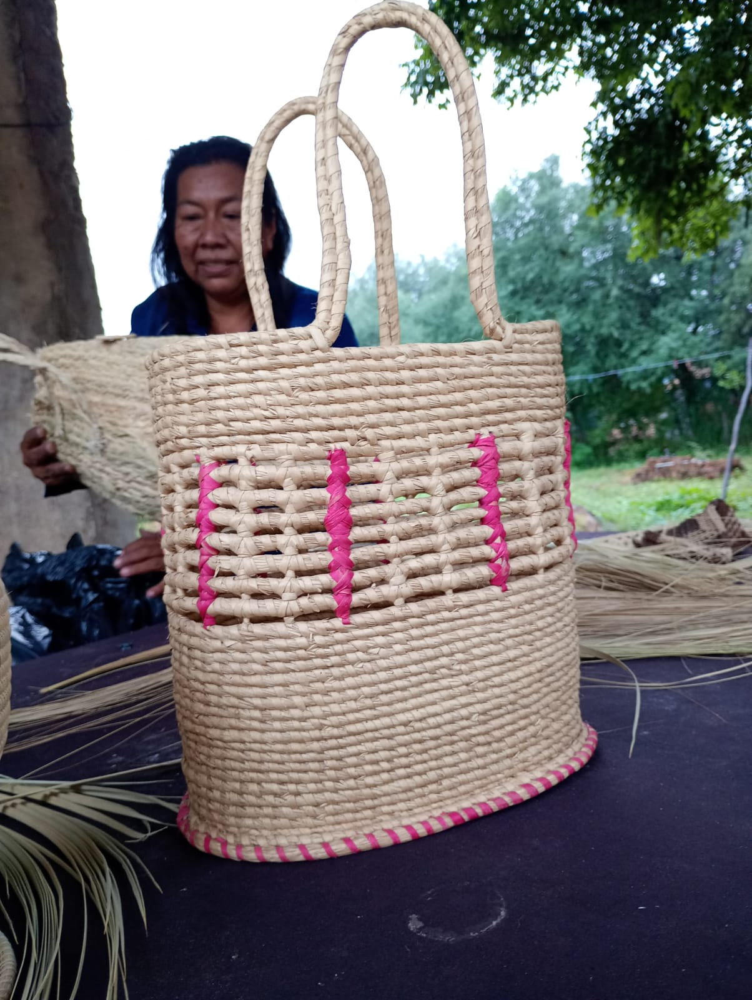

Colección artesanal
Historias hechas a mano
Cada pieza nace del encuentro entre el territorio, los materiales naturales y los saberes transmitidos entre generaciones.



Cesto tradicional
Una pieza que preserva técnicas transmitidas entre generaciones.
$28.000
Ver pieza